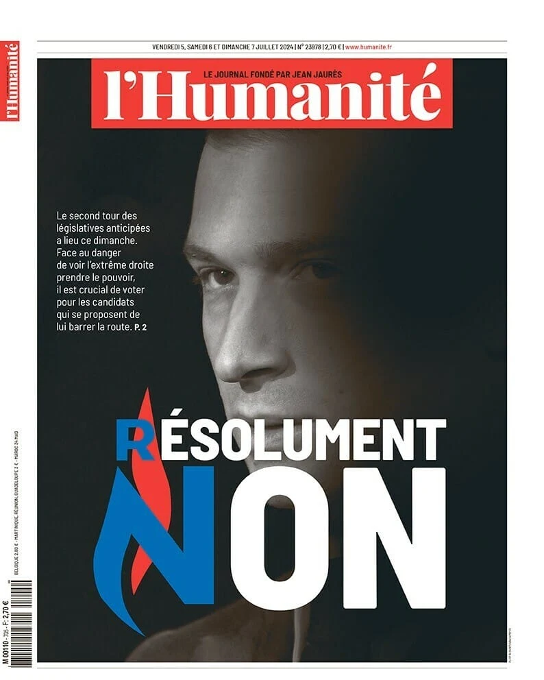
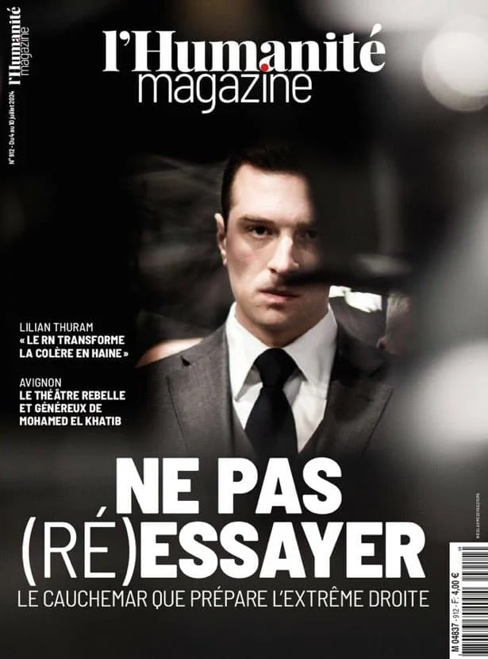

Appel archivé
Second tour des législatives. Notre appel du 5 juillet
Date indiquée par Facebook · 5 juillet 2024
Repères éditoriaux
Nous avions relayé deux couvertures de L’Humanité pour accompagner notre appel avant le second tour du 7 juillet 2024.
Texte conservé avec la publication
Contre la Haine, dimanche 7 juillet votons
#NouveauFrontPopulaire


Sources
Archive rouge · export Facebook · AR-0002-FB-01329
À lire aussi · « Ne pas manquer le rendez-vous avec l’histoire ». L’appel des sénateurs communistes